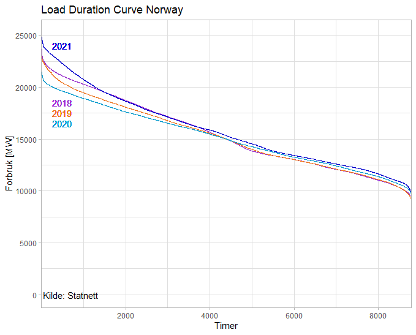

29 Norway
29.1 Energy Statistics
Energifakta.no
Access to reasonably priced hydropower has shaped energy use in Norway. Everyone has access to electricity, which is used for more purposes than in most other countries. Norway has a large energy-intensive manufacturing sector, and electricity is much more widely used to heat buildings and water than in other parts of the world. Because such a large proportion of electricity is produced from renewable sources, greenhouse gas emissions associated with stationary energy use are low in Norway.
Norway’s population has risen by nearly 1 million since 1990 - 22.3%.
1990: 4.241.473
2015: 5.188.607 Strong economic growth has resulted in a doubling of GDP since 1990. Both production of and demand for goods and services that use energy are growing steadily. However, final energy consumption has risen by only 16 %, so that the Norwegian economy has become gradually less energy-intensive.


Our World in Data 500 Twh
SB 250 Twh
“Energy use refers to use of primary energy before transformation to other end-use fuels, which is equal to indigenous production plus imports and stock changes, minus exports and fuels supplied to ships and aircraft engaged in international transport.”
Convertion: Kilo of oil equivalent unitjuggler
1 koe = 11.63 kWh
Worldbank/IEA/OECD: Norway 2015 : 5818 koe = 67663 kwh per capita
Our World in data : Norway 2015 : 101181 kwh per capitaStatnett: Load Duration Curve

50timer med mer enn 24 000 Mwh i forbruk i 2021. Til sammenligning var det kun to timer med tilsvarende forbruk i tre foregående år.
29.2 Energy Policy
Spetalen
Nordmenn er ikke forbrukerne, vi er eierne av norsk vannkraft. Det er essensen av det hele! Vi er enige, dette er en nasjonal skandale og flause for Norge. Investor Øystein Stray Spetalen mener politikerne kan skylde på seg selv for at strømprisene er så høye. Vi er enige! «Norge har ikke et energiproblem, vi har et politikerproblem»! – Vi har dessverre fått inn en kunnskapsløs gjeng. De som har sittet i regjering de siste ti årene har glemt det viktigste, nettopp forvaltningen av kraften vår, sier Spetalen til Klassekampen. Han mener to grep kan løse situasjonen: En skatt på 78 prosent på all kraft som eksporteres til utlandet Norge må melde seg ut av Acer, som er EU-byrået for samarbeid mellom energiregulatorer. Han mener tilknytningen til EU fratar Norge selvstyre, og han mener unionen er grunnleggende antidemokratisk. Det har Spetalen svært rett i! Det er totalt svikt i Stortinget! De har glemt hvem de jobber for!
29.2.1 Energy Policy History
Aam
I «gamle dager», fram til midten an 1970-tallet, bestemte man hvor mye vannkraft man skulle bygge ut i Norge etter prinsippet om «bestemmende år».
Da sa vi at vi skulle bygge ut så mye vannkraft at vi hadde nok kraft til innbyggerne i ni av ti år. Så fikk vi greie oss som best vi kunne i det tiende som ikke var så mye verre enn det niende. Litt sparing, m.v. og i verste fall litt rasjonering ville være tilstrekkelig for å få «endene til å møtes».
Da var det en utfordring at vi de fleste år hadde vannkraft til overs. Så lagde vi strategier for å få omsetning på overskuddet. Et viktig element var å installere varmekjeler hos store forbrukere som kunne varmes opp med både el og olje og som kunne legge om til oljefyring når det var tørre perioder. Et annet element var å selge fleksibel, billig kraft til industrien – som kunne kobles ut når det var manko på kraft. Videre knyttet vi landsdelene sammen elektrisk slik at kraftselskap som manglet kraft pga lite nedbør kunne kjøpe kraft av andre som lå i områder som hadde hatt mer nedbør. Til slutt lagde vi utenlandsforbindelser til Sverige og Danmark for å kunne utveksle kraft med utlandet.
Etter hvert lagde Samkjøringen av kraftverkene i Norge et spotmarked der kraftselskaper og industri kunne kjøpe og selge kraft av hverandre. Samkjøringen startet regionsvis fra i 1932 og ble landsomfattende i 1971. Den varte til 1991.
Filosofien i «gamle dager» i de fleste land i Europa, USA og andre land som var avhengig av å bygge ut termisk kraft, var å skape et robust, sikkert og billig kraftsystem. Derfor satset man på diversifisering – litt kullkraft, litt gasskraft, litt kjernekraft, litt oljekraft og litt vannkraft. Da hadde man en robust risikoavlastning hvis ulike råvarepriser skulle gå opp mye i pris og man kunne spille råvareleverandørene opp mot hverandre. Riktig nok var gassprisen sterkt knyttet til olje, men de andre råvareprisene var til en viss grad uavhengige av hverandre. Dette har fungert bra i «100» år fram til nå og kostnadene for kraftproduksjon har ligget på et «fornuftig» nivå.
For vannkraftlandet Norge var det meget gunstig å utvikle kraftutveksling med Europa. Norge hadde god tilgjengelighet på effekt ved at vannkraftmaskinene enkelt og raskt kunne øke sin produksjon. Videre kunne vi enkelt kjøre vannkraft stasjonene ned og kjøpe inn kraft fra EU for å lagre kjøpet i våre vannkraftmagasin.
Samspillet mellom det termiske Europa og vannkraftlandet Norge var «perfekt match». Norge kunne utnytte muligheten for rask opp og nedkjøring av vannkraftverkene kombinert med å bruke vannkraftmagasinene til korttidslager. Dette tjente vi godt på. Videre kunne vi skaffe oss rimelig termisk kraft på natt og helger i tørrår hvor vi trengte å importere kraft. EU fikk tilgang til toppeffekt på hverdagene til en billigere penge enn å produsere toppeffekten selv. Utbyggingen av kraftkabler til Danmark og Nederland var drevet av slike tanker.
Norge var det første landet til å liberalisere kraftforsyningen i 1990/91. Det var Senterpartimannen Eivind Reiten som var Olje-og energiminister 89/90 og miljøet rundt Handelshøyskolen i Bergen (blant andre Einar Hope) som var aktive pådrivere for å innføre en ny energilov som skilte ut kraftproduksjon som konkurranseutsatt virksomhet. Dette ble senere fulgt opp i Norden og i EU som har som mål å lage best mulig felles marked for kraft og gass i hele EU.
Den norske stat tjener mye på salg av dyr gass til Europa. Det at Norge har lav magasinfylling i Sør-Norge gjør at kraftprisen der blir spesielt preget av kraftprisen i Europa. Norske kraftprodusenter får godt betalet for de nedskrevne vannkraftanleggene med dagens høye priser. Vanlige borgerne i Norge må imidlertid betale den høye prisen i det felles europeiske kraftmarkedet hvor prisen på dyr gass og CO₂ er styrende nå.
Samspillet mellom det norske og nordiske kraftsystemet og EU er beskrevet blant annet i rapporten Nordic Grid Development Perspective 2021 (pdf), fra de nordiske nettselskapene (TSO’ene) og DNV-rapporten Energy Transition Norway 2021
Regjeringen har kommet borgerne i møte med krisepakken for strøm. og vil sette ned en energikommisjon.
Aam (2021) Hva i all verden skjer med kraftmarkedet?
Tamburstuen
Dette er en strukturell krise. Og den må løses med radikale strukturelle, politiske tiltak, for dette var i k k e hensikten med energiloven:
Ta kontroll over Nordpool og la Statnett og norske kraft- og nettselskap stå for omsetningen av strøm. Det er ingen mening i at et utenlandseid børs-selskap skal kunne tjene milliarder på omsetningen av norsk strøm og ta enorme utbytter ut av Norge
la brukerne kjøpe strømmen fra denne nye enheten - basert på et prinsipp om kost pluss. På denne måten får produsentene og netteierne pløyd direkte tilbake en rimelig fortjeneste som brukes for oppgraderinger av kraftverk og nett. Det er et potensiale for en vesentlig økning av produksjonen i eksisterende vannkraftverk, uten naturinngrep.
dette betyr at de såkalte strømselskapene forsvinner fra markedet
sett et krav om minimum magasinfylling hele året - og sørg for at dette etterleves. Vår magasinkapasitet utgjør 70% av vår årlige produksjon av vannkraft og er bygget opp nettopp for å lagre energi – denne kapasiteten er unik i Europa
reforhandle avtalene om utenlandskablene slik at Norge har nasjonal kontroll med hva som skal gå ut og inn av strøm
Pålegg Statnett å investere i stamnettet slik at en unngår flaskehalsene som skaper de store prisforskjellene innenlands
Dropp elektrifiseringen av sokkelen - gi oljeselskapene et lite skatteincentiv og krev at avgassene fra gassturbinene er renset innen en gitt frist
Lag beredskap - lovmessig og finansielt - for å sikre at kraftverk og nett forblir på norske hender
Bruk eierskapet i Statkraft og Statnett til å sørge for at disse to selskapene oppfyller sine oppdrag i Norge
Styrk arbeidet med reell energiøkonomisering, og start arbeidet med geoenergi/jordvarme og med bioenergi – norske skoger flyter over av biomasse